Noisette est le personnage en dessin animé. Les gâteaux sont peints. Tu mesures, tu mélanges, tu plies. Quand une étape est sur fond rose, tu appelles l’adulte : four, poêle, couteau, eau bouillante, huile chaude.
Six règles, à chaque fois
Un adulte est dans la cuisine, pas dans une autre pièce.
Je me lave les mains et j’attache les cheveux s’ils sont longs.
Je lis la recette jusqu’au bout, puis je sors les ingrédients.
Je pèse. La balance est plus juste qu’un verre. J’appuie sur tare pour repartir de zéro.
Avec un adulte. Le four, la poêle et la friture, c’est l’adulte. Je ne m’en approche pas sans lui.
On goûte quand l’adulte dit que ce n’est plus brûlant. Le sucre chaud brûle encore.
La tare, c’est le bouton qui remet la balance à zéro avec le bol dessus.
Deux levures, deux métiers
Levure de boulanger
Elle est vivante. Elle fait gonfler la pâte avant le four : brioche, beignets, croissants, danois. 20 g de fraîche = 7 g de sèche. 25 g de fraîche = 8 g de sèche. Un liquide brûlant la tue.
Levure chimique
C’est une poudre. Elle fait gonfler dans le four : pancakes, gaufres, cookies, muffins, cake, madeleines, financiers. On la mélange très bien à la farine. On ne l’échange pas avec la levure de boulanger.
Les mots de Noisette
Sabler
Frotter le beurre froid dans la farine jusqu’à obtenir du sable.
Foncer
Étaler la pâte dans le moule, avec un bord qui monte.
Piquer
Faire des trous avec une fourchette pour que le fond ne gonfle pas.
Dorer
Badigeonner d’œuf battu, sans écraser la pâte.
Tourer
Plier la pâte en trois, comme une lettre, pour faire des feuilles.
Cuisson à blanc
Cuire la pâte seule, avec du papier et des légumes secs dessus.
Chapitre 01
À la poêle
On commence par ce qui se mange vite. Toi, tu mélanges. L’adulte s’occupe du feu. Noisette reste à côté.
Je commence · ●○○
Pancakes
Des petits gâteaux épais à la poêle. Ils sont prêts quand les bulles s’ouvrent.
Pour6 à 8 pièces
Préparer15 min
Attendreaucun
Cuire2 min par pièce
C’est la recette pour apprendre à mélanger sans trop en faire. Des grumeaux tout petits sont normaux. Une pâte trop travaillée donne des pancakes durs.
Il te faut
200 gde farine de blé T55
2œufs moyens
250 mlde lait
25 gde sucre
8 gde levure chimique
20 gde beurre, plus un peu pour la poêle
1 pincéede sel fin (environ 1 g)
Avant
La levure chimique n’est pas la levure de boulanger. Ici, c’est la poudre.
Sors les œufs 10 minutes avant, ils se mélangent mieux.
Le beurre fondu doit être tiède, pas brûlant, sinon il cuit les œufs.
Matériel
balance
saladier
fouet
poêle
louche
Allergènes. gluten, œuf, lait.
Regarde les bulles. Quand elles restent ouvertes, c’est l’heure de retourner.
Les étapes
Lave tes mains. Pose la balance, un grand saladier et un fouet.
Mets la farine, le sucre, le sel et la levure chimique dans le saladier. Mélange pour que la poudre ne fasse pas de paquet.
Casse les œufs dans un petit bol. S’il y a une coquille, enlève-la. Verse-les dans le saladier.
Avec un adulte. Fais fondre le beurre, attends qu’il soit tiède, puis verse-le avec le lait.
Mélange peu de temps. Des petits grumeaux sont normaux. Si tu mélanges longtemps, les pancakes deviennent durs.
Avec un adulte. Chauffe la poêle à feu moyen avec un tout petit peu de beurre. Verse une petite louche.
Avec un adulte. Quand des bulles s’ouvrent à la surface et que le bord devient mat, l’adulte retourne le pancake. Encore environ une minute, jusqu’à ce qu’il soit doré.
C’est réussi quand
Ils sont épais, dorés, et moelleux au milieu. Le premier est souvent un essai : le deuxième sera mieux.
On le garde
Le jour même. Le lendemain, l’adulte les réchauffe 30 secondes à la poêle.
Noisette dit
Feu trop fort : bruns dehors, crus dedans. On baisse le feu.
Four sans ventilateur, grille du milieu. S’il ventile, l’adulte baisse de 15 °C.
Je commence · ●○○
Crêpes
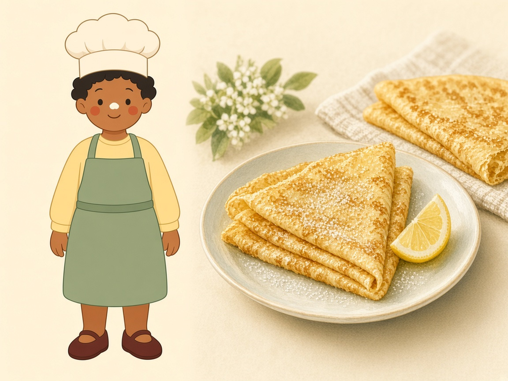
Une pâte liquide, un repos, puis des crêpes fines. Le sucre se met dans l’assiette, pas dans la pâte.
Pourenviron 12 crêpes
Préparer15 min
Attendre30 min
Cuire1 min par face
Le secret, c’est de verser le lait en deux fois. D’abord une crème épaisse sans grumeaux, ensuite le reste. La pâte repose pour que la farine gonfle.
Il te faut
250 gde farine de blé T55
3œufs moyens
500 mlde lait
30 gde beurre fondu
1 pincéede sel fin
Avant
Lis toute la recette avant d’allumer la poêle.
Le sucre, le citron ou la confiture attendent dans l’assiette.
La première crêpe sert souvent à régler le feu. On a le droit de la rater.
Matériel
balance
saladier
fouet
poêle
louche
Allergènes. gluten, œuf, lait.
Le trou au milieu de la farine, c’est pour que les œufs se mélangent sans faire de boules.
Les étapes
Mets la farine et le sel dans le saladier. Creuse un puits au milieu et casse les œufs dedans.
Verse la moitié du lait. Mélange au centre jusqu’à une crème lisse, sans grumeaux.
Avec un adulte. Verse le reste du lait, puis le beurre fondu tiède. La pâte doit être liquide, comme une crème fluide.
Couvre le saladier. Attends 30 minutes. Tu peux dessiner ou mettre la table pendant ce temps.
Avec un adulte. Chauffe bien la poêle et passe-y un peu de beurre.
Avec un adulte. Verse une louche. L’adulte penche la poêle pour étaler une couche fine.
Avec un adulte. Quand le bord se décolle et que le dessous est doré, l’adulte retourne la crêpe. Quelques secondes de l’autre côté suffisent.
C’est réussi quand
La crêpe est fine, souple, avec des taches dorées. Elle se plie sans casser.
On le garde
Deux jours au frais, séparées par du papier. On les réchauffe à la poêle.
Noisette dit
Des grumeaux ? Ajoute une cuillère de lait et mélange doucement. Ne rajoute pas de farine.
Four sans ventilateur, grille du milieu. S’il ventile, l’adulte baisse de 15 °C.
Je commence · ●○○
Gaufres
Une pâte lisse, un gaufrier très chaud, et des gaufres dorées. Le sucre est facultatif.
Pour6 à 8 gaufres
Préparer15 min
Attendreaucun
Cuire3 à 4 min
Cette pâte est nature : elle n’a presque pas de sucre. Tu peux la manger avec du fruit, ou ajouter 20 g de sucre avec la farine si tu la veux sucrée.
Il te faut
250 gde farine de blé T55
2œufs moyens
50 gde beurre
350 mlde lait
10 gde levure chimique
1 pincéede sel fin
Avant
10 g de levure chimique, c’est assez. On n’en rajoute pas.
Mélange la poudre avec la farine avant les liquides.
Le gaufrier brûle. Seul l’adulte l’ouvre et le ferme.
Matériel
balance
saladier
fouet
gaufrier
Allergènes. gluten, œuf, lait.
Pour un goûter, 20 g de sucre dans la farine suffisent. Le fruit fait le reste.
Les étapes
Mélange la farine, la levure chimique et le sel.
Avec un adulte. Ajoute les œufs, le lait et le beurre fondu tiède. Fouette jusqu’à une pâte lisse.
Si la pâte est trop épaisse pour couler lentement, ajoute une petite cuillère de lait. Pas plus.
Avec un adulte. Fais chauffer le gaufrier. Verse de la pâte sans déborder. Ferme.
Avec un adulte. Cuis jusqu’à ce que la vapeur diminue et que la gaufre soit dorée, souvent 3 à 4 minutes. N’ouvre pas trop tôt, sinon elle se déchire.
L’adulte la pose sur une grille, pas en pile, sinon elle ramollit.
C’est réussi quand
Elle est croustillante dehors, tendre dans les trous, et elle se tient quand on la soulève.
On le garde
Le jour même. On peut la réchauffer une minute au gaufrier.
Noisette dit
La première gaufre est souvent pâle. C’est normal : le fer finit de chauffer.
Four sans ventilateur, grille du milieu. S’il ventile, l’adulte baisse de 15 °C.
Chapitre 02
Les petits gâteaux
Ici, le four fait le travail. Un adulte l’allume et sort la plaque. Toi, tu prépares la pâte et tu remplis les moules.
Je commence · ●○○
Cookies
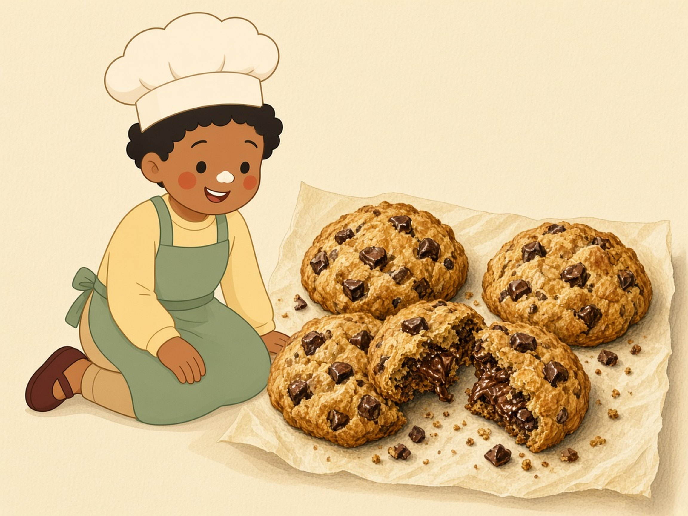
Des cookies épais et moelleux. Avec ces quantités, ils ne s’étalent pas en galettes fines.
Pourenviron 12 cookies
Préparer20 min
Attendreaucun
Cuire11 min à 180 °C
Le beurre doit être mou, pas fondu. S’il est liquide, les cookies deviennent plats et gras. Des boules de la taille d’une noix cuisent en 11 minutes. Plus grosses, elles resteraient crues.
Il te faut
250 gde farine de blé T55
125 gde beurre mou
100 gde cassonade
1œuf moyen
100 gde chocolat en morceaux
5 gde levure chimique (1 c. à café rase)
1 pincéede sel fin
Avant
Le beurre est mou si ton doigt s’enfonce et qu’il ne coule pas.
Allume le four seulement avec un adulte : 180 °C, sans ventilateur.
Espace les boules de 5 cm : même moelleux, ils grandissent un peu.
Matériel
balance
saladier
cuillère
plaque
papier cuisson
Allergènes. gluten, œuf, lait, chocolat.
Une noix, pas une balle de tennis. Sinon 11 minutes ne suffisent pas.
Les étapes
Écrase le beurre mou et la cassonade avec une cuillère, jusqu’à une crème.
Ajoute l’œuf. Mélange.
Dans un autre bol, mélange la farine, la levure et le sel. Verse-les sur la crème, ajoute le chocolat.
Mélange juste assez pour ne plus voir de farine. La pâte est épaisse.
Fais des boules de la taille d’une noix, environ 30 g. Pose-les sur une plaque couverte de papier.
Avec un adulte. Enfourne 11 minutes à 180 °C. Les bords dorent, le centre a encore l’air mou.
Avec un adulte. Attends 10 minutes avant de les prendre. La plaque brûle, et le centre finit de se poser en refroidissant.
C’est réussi quand
Le bord est doré, le milieu cède un peu sous le doigt, puis devient tendre en refroidissant.
On le garde
Trois jours dans une boîte en fer. Ils durcissent un peu, c’est normal.
Noisette dit
Pas de cassonade ? Prends 100 g de sucre en poudre. Le goût sera moins caramel.
Four sans ventilateur, grille du milieu. S’il ventile, l’adulte baisse de 15 °C.
Je commence · ●○○
Muffins
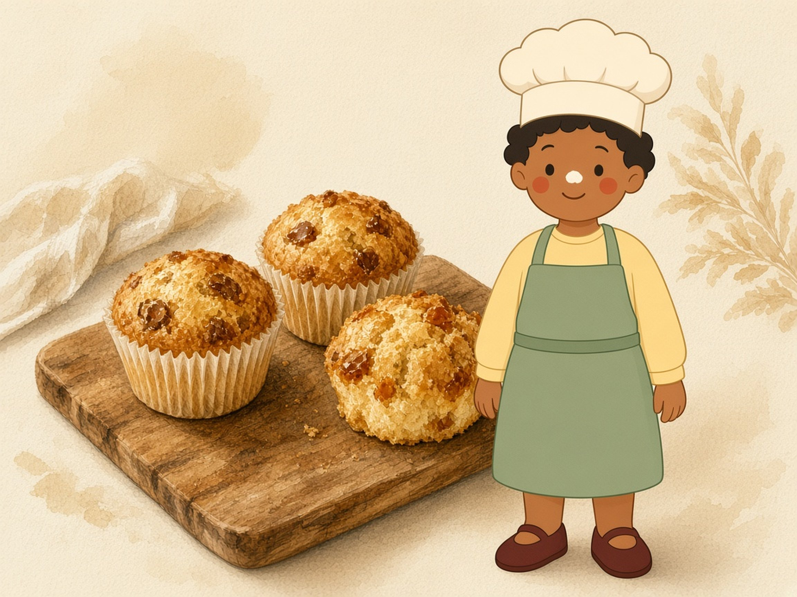
Deux bols, un mélange rapide, et des muffins qui gonflent dans leur caissette.
Pour10 muffins
Préparer15 min
Attendreaucun
Cuire18 à 22 min à 180 °C
On mélange les poudres d’un côté, les liquides de l’autre, puis on les réunit vite. Si tu tournes trop, les muffins font des tunnels et deviennent caoutchouc.
Il te faut
250 gde farine de blé T55
100 gde sucre
2œufs moyens
120 mlde lait
80 mld’huile au goût neutre
10 gde levure chimique
1 pincéede sel fin
Avant
10 g de levure chimique, pas plus, sinon le goût devient amer.
L’huile remplace le beurre : pas besoin de la faire fondre.
Remplis les caissettes aux deux tiers, sinon ça déborde.
Matériel
deux saladiers
fouet
moule à muffins
caissettes
Allergènes. gluten, œuf, lait.
Arrête de tourner dès que tu ne vois plus de farine blanche.
Les étapes
Bol 1 : farine, sucre, levure chimique, sel. Mélange très bien.
Bol 2 : œufs, lait, huile. Fouette.
Verse le bol 2 dans le bol 1. Tourne juste jusqu’à ce que la farine disparaisse. Des petits grumeaux sont permis.
Pose les caissettes dans le moule. Remplis-les aux deux tiers.
Avec un adulte. Cuis 18 à 22 minutes à 180 °C. Une pique en bois ressort sèche, ou avec une miette sèche, pas avec de la pâte crue.
Avec un adulte. Attends 5 minutes, puis pose les muffins sur une grille.
C’est réussi quand
Le dessus est doré et bombé. Le dedans est tendre, sans bande humide au fond.
On le garde
Deux jours sous une cloche, ou un mois au congélateur.
Noisette dit
Tu peux ajouter 80 g de pépites ou de fruits, à la fin, sans remélanger longtemps.
Four sans ventilateur, grille du milieu. S’il ventile, l’adulte baisse de 15 °C.
Je commence · ●○○
Cake sucré
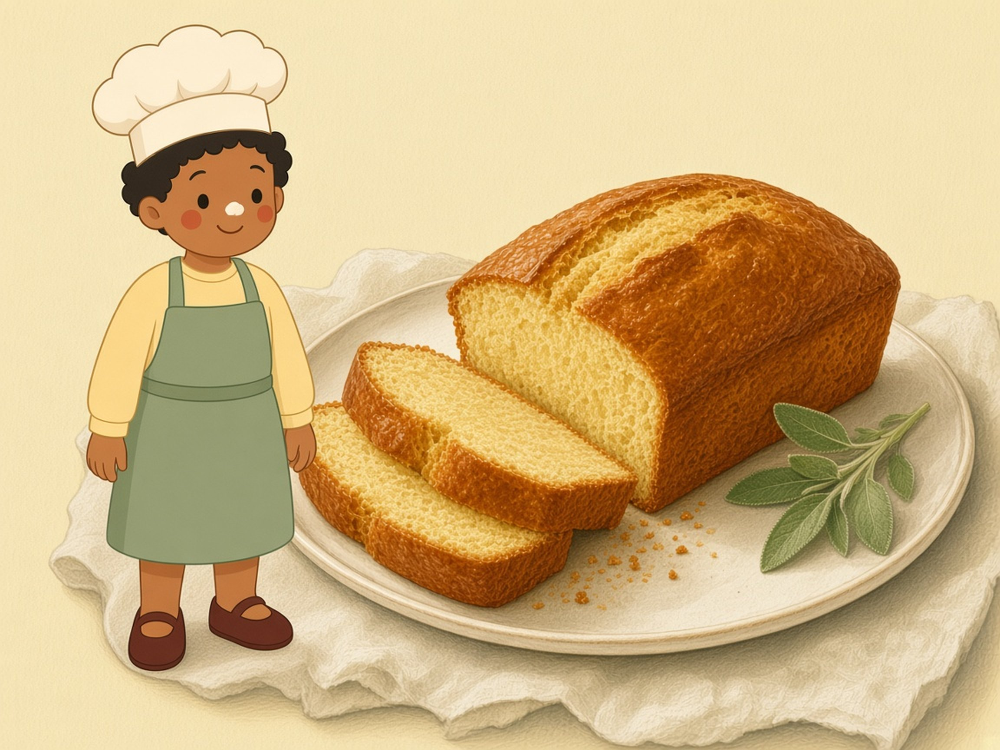
Un cake simple, dans un moule à cake. Le couteau planté au milieu dit s’il est cuit.
Pour1 cake, 8 parts
Préparer20 min
Attendreaucun
Cuire40 à 45 min à 170 °C
Ces quantités sont prévues pour un moule à cake d’environ 22 cm. Dans un moule plus petit, la pâte déborde. Dans un moule trop grand, le cake est plat et cuit trop vite.
Il te faut
200 gde farine de blé T55
3œufs moyens
120 gde sucre
120 gde beurre mou
8 gde levure chimique
1 pincéede sel fin
Avant
Beurre le moule et farine-le, ou pose une bande de papier.
Le beurre est mou, pas fondu.
Les œufs entrent un par un, pour que la pâte ne tranche pas.
Matériel
saladier
fouet
moule à cake 22 cm
papier cuisson
Allergènes. gluten, œuf, lait.
La lame doit ressortir sans pâte brillante. Une miette sèche, c’est cuit.
Les étapes
Avec un adulte. Allume le four à 170 °C, chaleur statique.
Écrase le beurre mou et le sucre jusqu’à une crème pâle.
Ajoute les œufs un par un. Mélange bien entre chaque.
Mélange la farine, la levure et le sel, puis ajoute-les. Tourne seulement jusqu’à ce que la farine disparaisse.
Verse dans le moule. Lisse le dessus.
Avec un adulte. Cuis 40 à 45 minutes. Une lame plantée au centre ressort sèche.
Avec un adulte. Si le dessus brunit trop tôt, pose une feuille de papier d’aluminium sans appuyer.
Attends 10 minutes dans le moule, puis refroidis sur une grille. Coupé trop chaud, le cake est pâteux.
C’est réussi quand
Il sonne un peu creux quand on tapote le dessous, et la lame est propre.
On le garde
Trois jours emballé, une fois froid. On ne le ferme pas tant qu’il est chaud.
Noisette dit
Un zeste de citron râpé dans le sucre parfume sans changer la recette.
Four sans ventilateur, grille du milieu. S’il ventile, l’adulte baisse de 15 °C.
Je progresse · ●●○
Madeleines
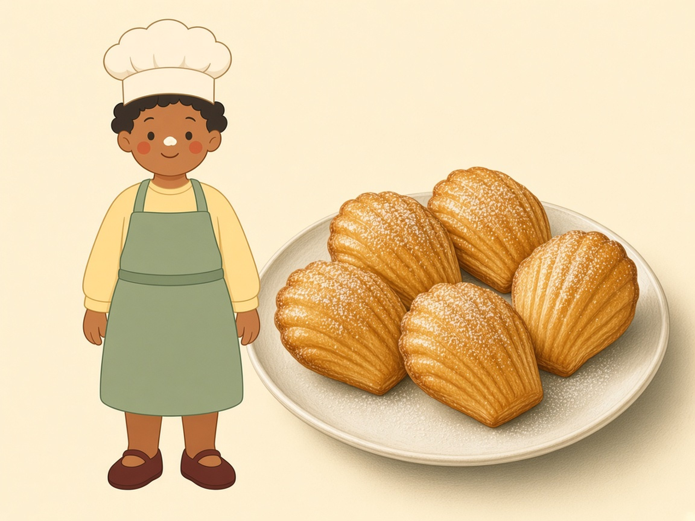
La bosse vient du froid, puis du four très chaud. On n’ouvre pas la porte avant 8 minutes.
Pour12 grandes ou 18 petites
Préparer20 min
Attendre1 h au frais
Cuire8 à 10 min à 200 °C
La pâte repose au froid au moins une heure. Elle entre ensuite dans un four déjà très chaud. Ce choc fait la bosse. Si tu ouvres la porte trop tôt, la bosse retombe.
Il te faut
150 gde farine de blé T55
120 gde sucre
3œufs moyens
125 gde beurre
5 gde levure chimique
1 pincéede sel fin
Avant
Fais fondre le beurre, puis laisse-le tiédir. Brûlant, il cuit les œufs.
Beurre les coques et saupoudre-les de farine. Tape pour enlever le trop-plein.
Sans moule à madeleines, un moule à mini-muffins marche, sans la forme de coquille.
Matériel
casserole
saladier
moule à madeleines
pinceau
Allergènes. gluten, œuf, lait.
Pâte froide, four brûlant, porte fermée. C’est tout le secret.
Les étapes
Avec un adulte. Fais fondre le beurre et laisse-le devenir tiède.
Fouette les œufs et le sucre jusqu’à ce que le mélange blanchisse un peu.
Ajoute la farine, la levure et le sel. Mélange.
Verse le beurre tiède. Mélange jusqu’à une pâte lisse et brillante.
Couvre et mets au réfrigérateur au moins 1 heure.
Avec un adulte. Chauffe le four à 200 °C. Remplis chaque coque aux deux tiers, pas plus.
Avec un adulte. Cuis 8 à 10 minutes sans ouvrir la porte. C’est prêt quand la bosse est dorée et que le bord se décolle.
Avec un adulte. Attends 2 minutes, puis démoule sur une grille.
C’est réussi quand
Une bosse dorée, un bord plus brun, un cœur moelleux.
On le garde
Le jour même, elles sont souples. Le lendemain, elles sèchent un peu.
Noisette dit
Tu peux saupoudrer un peu de sucre glace seulement quand elles sont froides.
Four sans ventilateur, grille du milieu. S’il ventile, l’adulte baisse de 15 °C.
Je progresse · ●●○
Financiers
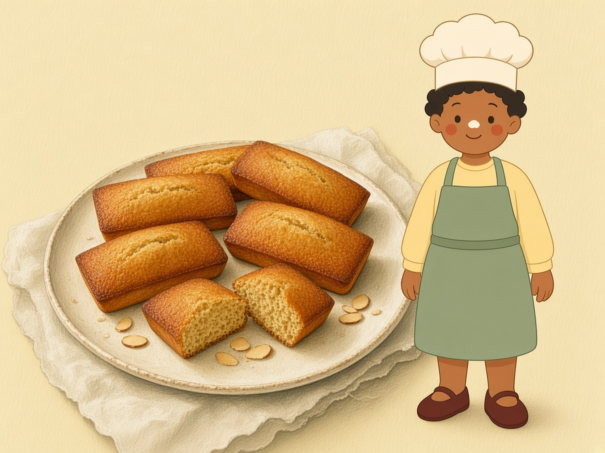
Des petits gâteaux à l’amande et au beurre noisette. Le beurre doit refroidir avant les blancs.
Pourenviron 8 petits
Préparer25 min
Attendre10 min
Cuire14 à 16 min à 180 °C
Le beurre noisette sent la noisette et a de petits points bruns. S’il devient noir, il est brûlé : on recommence, sinon le gâteau est amer. On le laisse tiédir, sinon il cuit les blancs dans le bol.
Il te faut
100 gde poudre d’amandes
100 gde sucre glace
80 gde beurre
40 gde farine
3blancs d’œufs (environ 90 g)
1 pincéede sel fin
Avant
Cette recette contient des amandes. Si quelqu’un y est allergique, on choisit une autre page.
Garde les jaunes pour une omelette, pas pour cette pâte.
Si la pâte est un bloc impossible à verser, ajoute une cuillère de blanc.
Matériel
casserole
saladier
petits moules
pinceau
Allergènes. gluten, œuf, lait, amandes.
Noisette, c’est l’odeur. Pas la couleur noire.
Les étapes
Avec un adulte. Fais fondre le beurre à feu moyen. Il mousse, puis la mousse tombe, ça sent la noisette, et des points bruns apparaissent. Hors du feu tout de suite.
Verse le beurre dans un bol. Attends 10 minutes. Il doit être tiède, pas chaud.
Mélange la poudre d’amandes, le sucre glace, la farine et le sel.
Ajoute les blancs. Mélange jusqu’à une pâte lisse.
Ajoute le beurre tiède. Mélange.
Beurre les moules. Remplis-les aux trois quarts.
Avec un adulte. Cuis 14 à 16 minutes à 180 °C, jusqu’à ce qu’ils soient dorés et qu’une pique ressorte sèche.
C’est réussi quand
Le dessus est brun clair et brillant, le bord un peu croquant, le cœur moelleux.
On le garde
Deux jours dans une boîte. Ils se gardent mieux que les madeleines.
Noisette dit
Beurre noir : on le jette et on recommence avec 80 g de beurre neuf.
Four sans ventilateur, grille du milieu. S’il ventile, l’adulte baisse de 15 °C.
Chapitre 03
Les pâtes à tarte
Cinq pâtes, cinq caractères. La brisée est neutre, la sablée est friable, la sucrée est tendre, l’amandine sent l’amande, la feuilletée fait des feuilles.
Je progresse · ●●○
Pâte brisée
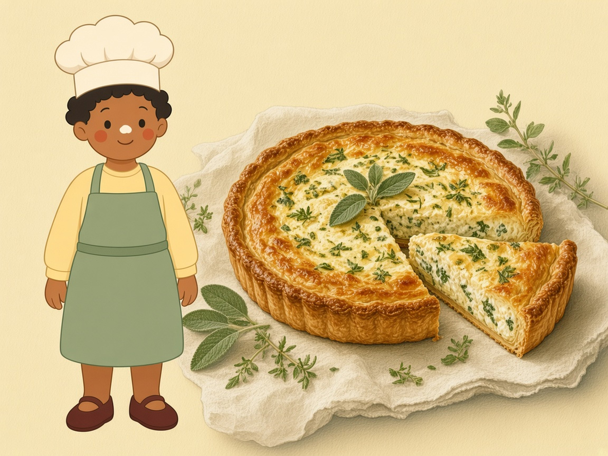
La pâte des tartes salées. On la sable, on ne la pétrit pas, puis on en fait une quiche.
Pour1 tarte de 24 cm
Préparer20 min
Attendre30 min au frais
Cuirevoir la quiche
Sabler, c’est frotter le beurre froid dans la farine jusqu’à obtenir du sable. Si tu pétris longtemps, la pâte devient dure en cuisant. 60 ml d’eau peuvent suffire. Si des miettes restent sèches, on ajoute une cuillère à café d’eau froide, puis une autre, pas plus de trois.
Il te faut
250 gde farine de blé T55
125 gde beurre bien froid
60 mld’eau froide
5 gde sel fin
Avant
Le beurre sort du frigo au dernier moment.
Travaille vite, avec le bout des doigts.
Aplatis la boule en disque avant le repos : elle sera plus facile à étaler.
Matériel
saladier
film ou assiette
moule à tarte
rouleau
Allergènes. gluten, lait, œuf.
Sable, puis boule. On ne tape pas la pâte comme de la pâte à modeler.
Les étapes
Avec un adulte. Coupe le beurre froid en petits dés.
Mets la farine et le sel dans le saladier. Ajoute le beurre.
Du bout des doigts, écrase le beurre dans la farine jusqu’à un sable grossier. Il ne reste plus de gros morceaux.
Verse l’eau. Rassemble la pâte en boule sans la pétrir. Si elle s’effrite, ajoute une cuillère à café d’eau froide.
Écrase la boule en disque, enveloppe-la, et mets-la 30 minutes au frais.
La suite : une quiche simple
La pâte brisée aime le salé. Voici une quiche pour 6 personnes, dans le moule de 24 cm.
1disque de pâte brisée
3œufs moyens
200 mlde crème liquide, ou 150 ml de lait entier
1 pincéede sel, et un peu de poivre
40 gde fromage râpé, si tu veux
Sur un plan fariné, étale la pâte épaisse comme une pièce. Fonce le moule : la pâte monte sur les bords. Pique le fond avec une fourchette.
Avec un adulte. Pose un papier et des légumes secs dessus. Cuis 15 minutes à 180 °C.
Avec un adulte. Sors le moule. Enlève le papier et tous les légumes secs. Le fond est vide, à peine doré.
Bats les œufs, la crème, le sel et le fromage.
Avec un adulte. Verse sur le fond vide. Cuis encore 25 à 30 minutes à 180 °C.
C’est cuit quand le centre tremble à peine et qu’une lame ressort sans œuf liquide. Attends 10 minutes avant de couper.
C’est réussi quand
La pâte forme une boule qui ne colle pas aux doigts et ne se casse pas en sable.
On le garde
Deux jours au frais, ou un mois au congélateur, bien emballée.
Noisette dit
Trop collante ? Vingt minutes au frais valent mieux qu’un grand nuage de farine.
Four sans ventilateur, grille du milieu. S’il ventile, l’adulte baisse de 15 °C.
Je progresse · ●●○
Pâte sablée
La pâte friable des tartes aux fruits. On sable d’abord, le sucre et l’œuf arrivent ensuite.
Pour1 tarte de 24 cm
Préparer20 min
Attendre30 min au frais
Cuireà blanc, puis des fruits
Elle ressemble à la pâte sucrée, mais le geste change. Ici on frotte le beurre dans la farine. La pâte cuit plus croustillante. Le sucre glace se mélange sans grains.
Il te faut
250 gde farine de blé T55
125 gde beurre bien froid
80 gde sucre glace
1œuf moyen
1 pincéede sel fin
Avant
Beurre froid, doigts rapides.
Casse l’œuf dans un petit bol avant de le verser.
Si la pâte colle, direction le frigo, pas un kilo de farine.
Matériel
saladier
moule à tarte
rouleau
fourchette
Allergènes. gluten, œuf, lait.
D’abord le sable, ensuite le sucre, ensuite l’œuf.
Les étapes
Avec un adulte. Coupe le beurre froid en dés.
Sable la farine, le sel et le beurre du bout des doigts, jusqu’à un sable sans gros morceaux.
Ajoute le sucre glace. Mélange encore un peu.
Ajoute l’œuf. Rassemble une boule sans pétrir longtemps.
Si elle s’effrite, trois gouttes d’eau froide. Aplatis en disque, filme, 30 minutes au frais.
La suite : tarte aux fruits frais
On cuit la pâte toute seule, on la laisse refroidir, puis on pose les fruits. Ils restent frais.
1disque de pâte sablée
400 gde fruits lavés : fraises, framboises, kiwi
3 c. à soupede confiture
1 c. à caféd’eau
Étale la pâte, fonce un moule de 24 cm, pique le fond.
Avec un adulte. Couvre de papier et de légumes secs. Cuis 15 minutes à 180 °C. Enlève le papier et cuis encore 8 à 10 minutes, jusqu’au doré clair.
Laisse tiédir. Range les fruits dessus.
Avec un adulte. Fais tiédir la confiture avec l’eau et badigeonne les fruits pour qu’ils brillent.
C’est réussi quand
Une boule souple, mate, qui ne graisse pas les doigts.
On le garde
Deux jours au frais, un mois au congélateur.
Noisette dit
Cette pâte brunit plus vite que la brisée à cause du sucre. On surveille le four.
Four sans ventilateur, grille du milieu. S’il ventile, l’adulte baisse de 15 °C.
Je progresse · ●●○
Pâte sucrée
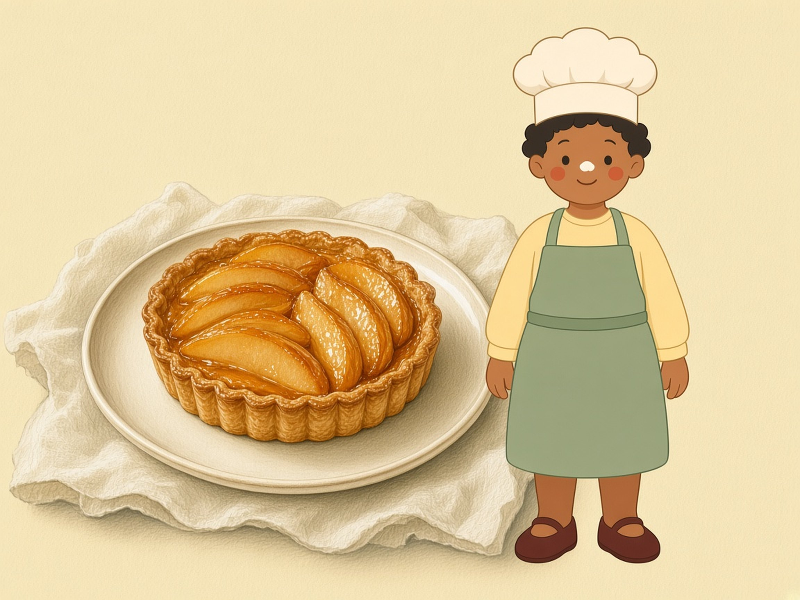
Plus sucrée et plus tendre que la sablée. Ici, on mélange d’abord le beurre et le sucre.
Pour1 tarte de 24 cm
Préparer20 min
Attendre1 h au frais
Cuireenviron 35 min
Le beurre est mou, pas froid. On le crème avec le sucre glace, puis l’œuf, puis la farine. On ne pétrit pas longtemps. Elle est plus molle : une heure au frais la raffermit.
Il te faut
250 gde farine de blé T55
125 gde beurre mou
100 gde sucre glace
1œuf moyen
1 pincéede sel fin
Avant
Beurre mou : le doigt s’enfonce, le beurre ne brille pas comme de l’huile.
Arrête de mélanger dès que la farine a disparu.
Cette pâte brunit vite. On regarde le four à partir de 25 minutes.
Matériel
saladier
cuillère
moule
rouleau
Allergènes. gluten, œuf, lait.
Sablée : beurre froid dans la farine. Sucrée : beurre mou avec le sucre. Retiens ça.
Les étapes
Écrase le beurre mou, le sucre glace et le sel jusqu’à une crème.
Ajoute l’œuf. Mélange.
Ajoute la farine. Rassemble une boule sans pétrir.
Aplatis en disque, enveloppe, et mets 1 heure au réfrigérateur.
La suite : tarte aux poires
Les poires cuisent sur la pâte. Des pommes marchent de la même façon.
1disque de pâte sucrée
3poires mûres mais fermes
30 gde sucre
20 gde beurre
Étale la pâte et fonce un moule de 24 cm. Pique le fond.
Avec un adulte. Épluche les poires, enlève le cœur, coupe-les en fines tranches.
Range les tranches sur la pâte. Saupoudre le sucre et pose des noisettes de beurre.
Avec un adulte. Cuis 35 minutes à 180 °C, jusqu’à ce que le bord soit doré et les fruits tendres.
C’est réussi quand
Après le repos, la pâte est ferme et s’étale sans coller partout.
On le garde
Deux jours au frais, un mois au congélateur.
Noisette dit
Si elle colle au rouleau, elle n’est pas assez froide. Dix minutes au frais, et on recommence.
Four sans ventilateur, grille du milieu. S’il ventile, l’adulte baisse de 15 °C.
Je progresse · ●●○
Pâte amandine
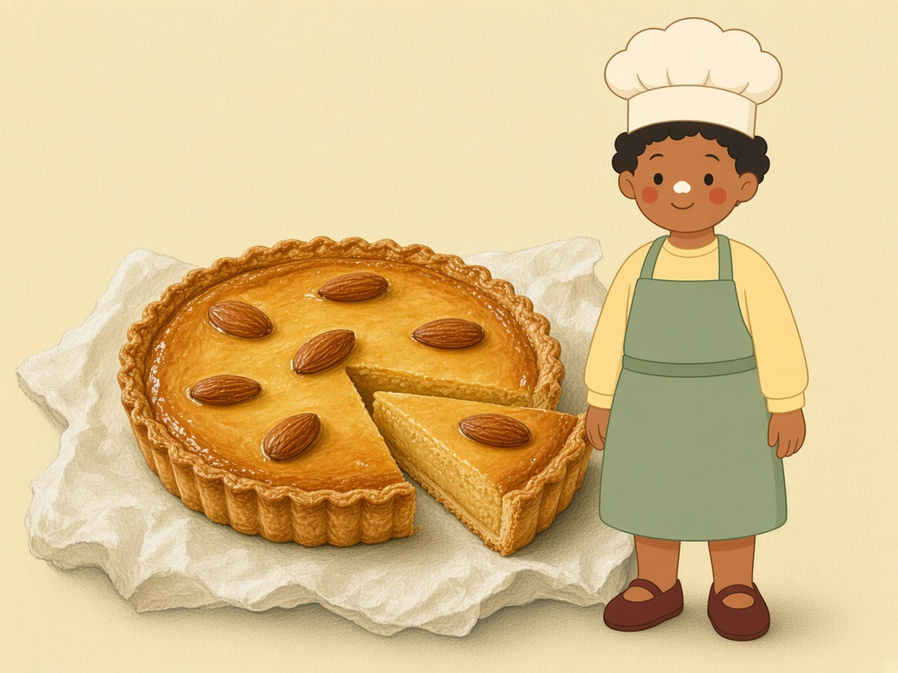
Une pâte à tarte qui contient déjà des amandes. Ce n’est pas une crème : c’est le fond.
Pour1 tarte de 24 cm
Préparer20 min
Attendre30 min au frais
Cuireenviron 30 min
On l’appelle pâte amandine parce que la poudre d’amandes est dans la pâte, avec la farine. On s’en sert pour foncer un moule. La garniture d’après est une petite crème d’amande, à part.
Il te faut
250 gde farine de blé T55
125 gde beurre froid
50 gde poudre d’amandes
80 gde sucre en poudre
1œuf moyen
1 pincéede sel fin
Avant
Amandes : si quelqu’un est allergique, on change de recette.
Le sucre en poudre peut laisser un petit grain. Du sucre glace, au même poids, est plus facile.
Beurre froid, comme pour la sablée.
Matériel
saladier
moule à tarte
rouleau
Allergènes. gluten, œuf, lait, amandes.
La pâte, c’est le fond. La crème d’amande, c’est ce qu’on étale dedans.
Les étapes
Avec un adulte. Coupe le beurre froid en dés.
Mélange la farine, la poudre d’amandes et le sel. Sable avec le beurre.
Ajoute le sucre, puis l’œuf. Forme une boule sans pétrir.
Aplatis en disque. 30 minutes au frais.
La suite : crème d’amande
Une garniture courte, aux mêmes parfums. Étale-la dans la pâte crue, puis enfourne.
50 gde beurre mou
50 gde sucre
1œuf moyen
50 gde poudre d’amandes
Étale la pâte et fonce le moule de 24 cm.
Écrase le beurre mou et le sucre. Ajoute l’œuf, puis la poudre d’amandes.
Étale cette crème dans le fond, sans déborder.
Avec un adulte. Cuis 28 à 32 minutes à 180 °C. Le milieu doit être gonflé, doré, et une lame ressort presque sèche.
C’est réussi quand
La boule sent légèrement l’amande et se tient sans coller.
On le garde
Deux jours au frais, un mois au congélateur.
Noisette dit
Poudre d’amandes et amandes effilées ne sont pas la même chose. Ici, il faut la poudre.
Four sans ventilateur, grille du milieu. S’il ventile, l’adulte baisse de 15 °C.
Je relève le défi · ●●●
Pâte feuilletée rapide
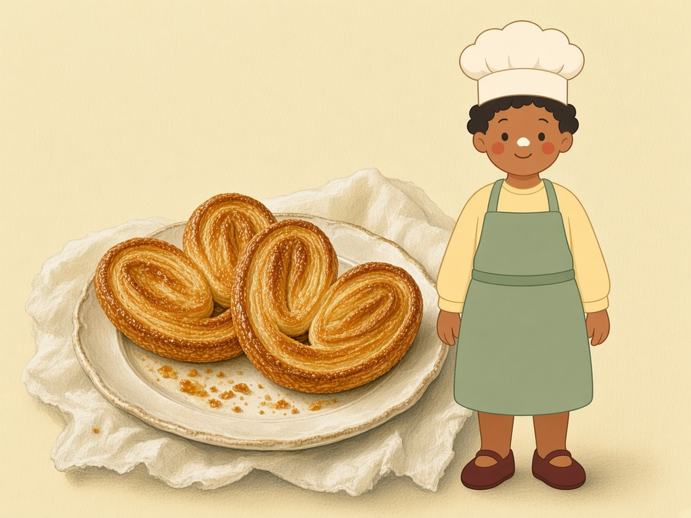
Du beurre en morceaux, quatre plis en trois, et des feuilles. Un adulte guide le rouleau.
Pourenviron 12 palmiers
Préparer40 min
Attendreplusieurs pauses au frais
Cuire12 à 15 min à 200 °C
Ce n’est pas grave si la pâte a l’air mal finie : on doit voir des morceaux de beurre de la taille d’une noisette. S’ils disparaissent, il n’y aura pas de feuilles. 120 ml d’eau sont la base. Si des miettes sèches restent, une cuillère à soupe d’eau froide en plus.
Il te faut
250 gde farine de blé T55
200 gde beurre très froid
120 mld’eau très froide
5 gde sel fin
Avant
C’est un défi. L’adulte roule et surveille le four. Toi, tu plies et tu sucres.
Farine le plan de travail pour que ça ne colle pas.
Si le beurre devient brillant ou mou, on s’arrête et on met 20 minutes au frais.
Matériel
saladier
rouleau
film
plaque
papier cuisson
Allergènes. gluten, lait.
Des morceaux de beurre visibles, c’est réussi, pas raté.
Les étapes
Avec un adulte. Coupe le beurre en dés de la taille d’une noisette. Laisse-les froids.
Mélange la farine et le sel. Ajoute les dés. Enrobe-les de farine sans les écraser en sable.
Verse l’eau froide. Rassemble vite une pâte rugueuse. On doit encore voir le beurre.
Aplatis un rectangle, filme, 20 minutes au frais.
Avec un adulte. Étale un rectangle trois fois plus long que large, épais comme ton doigt.
Plie en trois, comme une lettre : le tiers gauche sur le milieu, puis le tiers droit par-dessus. C’est un tour.
Tourne la pâte d’un quart de tour. Fais un deuxième tour. Mets 20 minutes au frais.
Fais encore deux tours, avec une pause au frais si le beurre mollit. Tu as alors 4 tours. Repose 30 minutes au frais.
La suite : des palmiers
Le sucre caramélise. Il passe du doré au brûlé très vite : l’adulte reste devant le four.
1pâton de feuilletée
40 gde sucre
Avec un adulte. Saupoudre le plan de sucre. Étale la pâte en rectangle, épaisse de 5 mm. Sucre l’autre face.
Rabats les deux grands côtés vers le milieu, puis plie en deux, comme un livre.
Avec un adulte. 15 minutes au frais. Coupe des tranches de 1 cm.
Avec un adulte. Pose-les à plat, bien espacées, sur du papier. Cuis 12 à 15 minutes à 200 °C, jusqu’au doré. Pas plus : le sucre brûle.
Attends 5 minutes sur la plaque. Ils sont fragiles tant qu’ils sont chauds.
C’est réussi quand
En coupant un bout, tu vois des couches. Le beurre ne coule pas sur la table.
On le garde
Deux jours au frais, ou un mois au congélateur avant les palmiers.
Noisette dit
Quatre tours, pas dix. Trop de tours écrasent les feuilles.
Four sans ventilateur, grille du milieu. S’il ventile, l’adulte baisse de 15 °C.
Chapitre 04
La pâte à choux
Une seule pâte, et elle se comporte comme par magie : elle gonfle toute seule dans le four. La règle d’or : on n’ouvre pas la porte.
Je progresse · ●●○
Pâte à choux
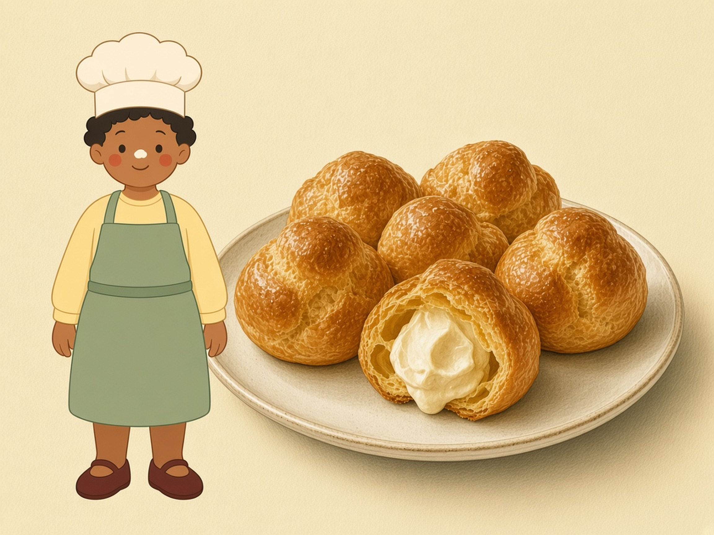
De l’eau, du beurre, de la farine, des œufs. Au four, ça devient des choux creux.
Pourenviron 12 choux
Préparer25 min
Attendre5 min hors du feu
Cuire25 min à 180 °C
On sèche la pâte dans la casserole, on la laisse tiédir, puis on ajoute les œufs un par un. Trop chaude, elle cuit les œufs. Trop ferme, les choux ne gonflent pas. Le test : la pâte tombe de la cuillère en ruban et forme un V.
Il te faut
125 mld’eau
50 gde beurre
75 gde farine
2œufs moyens
1 pincéede sel fin
Avant
Toute la farine entre d’un coup, hors du feu.
Des petits choux, taille d’une noix. Les gros demandent plus de 25 minutes.
On n’ouvre pas le four pendant les 25 minutes.
Matériel
casserole
cuillère en bois
plaque
papier cuisson
deux cuillères
Allergènes. gluten, œuf, lait.
Porte fermée. Si tu l’ouvres trop tôt, le chou soupire et retombe.
Les étapes
Avec un adulte. Mets l’eau, le beurre et le sel dans la casserole. Porte à ébullition : le beurre est fondu et ça bouillonne.
Hors du feu, verse toute la farine d’un coup. Mélange fort. Une boule se forme.
Avec un adulte. Remets sur feu doux. Remue 1 minute. Une fine pellicule se dépose au fond. C’est le desséchage.
Mets la boule dans un saladier. Attends 5 minutes. Elle doit être tiède, pas brûlante.
Bats les œufs dans un bol. Ajoute-en la moitié, mélange jusqu’à ce que ce soit absorbé, puis le reste petit à petit.
Arrête quand la pâte fait un ruban. Si les œufs sont gros, tu n’utiliseras peut-être pas la dernière cuillère.
Avec deux cuillères, pose des noix de pâte sur le papier, espacées de 4 cm.
Avec un adulte. Cuis 25 minutes à 180 °C sans ouvrir. Éteins, cale la porte avec une cuillère en bois, laisse 10 minutes.
C’est réussi quand
Ils sont dorés, légers, et creux si on en ouvre un une fois froid. Un chou mou et lourd n’est pas assez cuit.
On le garde
Le jour même, non fourrés. Une fois garnis de crème, au frais, et on les mange dans la journée.
Noisette dit
Pour garnir : l’adulte fouette 200 ml de crème très froide avec 20 g de sucre. On remplit seulement quand les choux sont froids.
Four sans ventilateur, grille du milieu. S’il ventile, l’adulte baisse de 15 °C.
Chapitre 05
Avec de la levure
La levure de boulanger est vivante. Le lait trop chaud la tue. On la laisse gonfler au calme, puis l’adulte cuit — ou, pour les beignets, l’adulte frit.
Je progresse · ●●○
Brioche légère
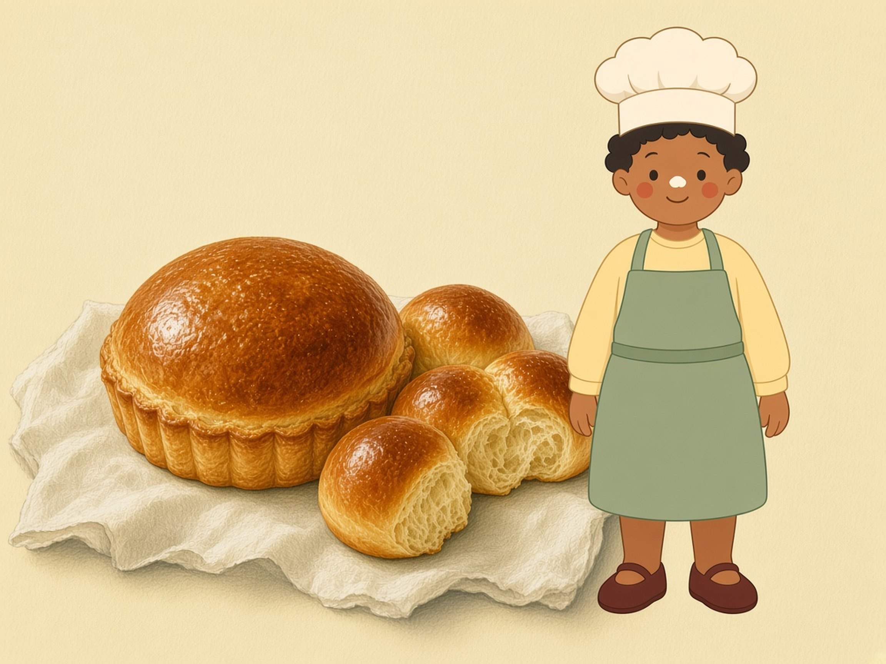
Une brioche facile à pétrir : 100 g de beurre pour 500 g de farine. Elle est moins riche que celle du boulanger, et elle reste moelleuse.
Pour8 petites brioches
Préparer30 min
Attendreenviron 2 h de pousse
Cuire22 à 25 min à 180 °C
Chez le boulanger, il y a souvent beaucoup plus de beurre. Cette version gonfle bien et se pétrit à la main. On cuit 8 boules dans un moule à muffins. Un seul gros cake demanderait 32 à 38 minutes, pas 25.
Il te faut
500 gde farine de blé T55
20 gde levure fraîche, ou 7 g de levure sèche
3œufs moyens
120 mlde lait tiède
100 gde beurre mou
60 gde sucre
8 gde sel fin
1œuf pour dorer
Avant
Pose la levure d’un côté du bol et le sel de l’autre. Ils ne doivent pas rester en tas l’un sur l’autre.
Le lait est tiède comme un bain : le doigt reste à l’aise. S’il brûle, la levure meurt.
La pâte colle au début. N’ajoute pas un grand verre de farine.
Matériel
grand saladier
moule à muffins
torchon
pinceau
Allergènes. gluten, œuf, lait.
Levure et sel, chacun de son côté. Lait tiède, jamais brûlant.
Les étapes
Mets la farine et le sucre dans le bol. Sel d’un côté, levure de l’autre. Si la levure est sèche, mélange-la à la farine.
Ajoute les œufs et le lait tiède. Mélange, puis pétris 8 minutes. La pâte devient lisse.
Ajoute le beurre mou en morceaux. Pétris encore 5 minutes, jusqu’à ce qu’il disparaisse.
Couvre. Laisse doubler dans un endroit tiède, pas sur le radiateur. Compte 1 h à 1 h 30. Un repère sur le bol aide à voir.
Chasse l’air avec le poing, doucement. Fais 8 boules. Pose-les dans un moule à muffins beurré.
Couvre encore. Laisse doubler, environ 45 minutes.
Avec un adulte. Bats l’œuf et badigeonne délicatement. Cuis 22 à 25 minutes à 180 °C, jusqu’au doré profond.
C’est réussi quand
Le dessus est bien doré, une pique ressort sèche, et la mie est filante.
On le garde
Deux jours dans un torchon. Elle sèche ensuite. On peut la congeler.
Noisette dit
Elle n’a pas doublé ? La pièce est trop froide, ou le lait était trop chaud. Trouve un coin tiède et attends encore.
Four sans ventilateur, grille du milieu. S’il ventile, l’adulte baisse de 15 °C.
Je relève le défi · ●●●
Beignets
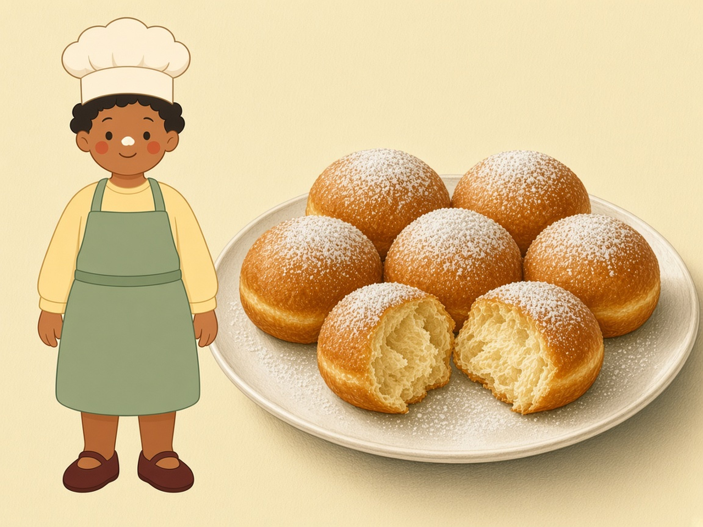
Toi, tu fais la pâte et les formes. L’adulte, seulement l’adulte, s’occupe de l’huile à 170 °C.
Pour12 à 16 beignets
Préparer30 min
Attendre1 h 30 de pousse
Cuire1 min 30 par face
Sans sel, cette pâte est fade et la levure va trop vite. On en met 6 g. L’huile pas assez chaude gave les beignets d’huile. Trop chaude, ils sont noirs et crus dedans. 170 °C, c’est le bon point.
Il te faut
500 gde farine de blé T55
20 gde levure fraîche, ou 7 g de levure sèche
250 mlde lait tiède
2œufs moyens
60 gde sucre
70 gde beurre mou
6 gde sel fin
huile de tournesol pour frire, et du sucre pour rouler
Avant
Tu ne touches pas la casserole d’huile. Tu restes à un bras de distance.
Levure d’un côté, sel de l’autre. Lait tiède, doigt à l’aise.
On fait frire peu de beignets à la fois, sinon l’huile refroidit.
Matériel
saladier
rouleau
verre pour découper
casserole haute ou friteuse
papier absorbant
Allergènes. gluten, œuf, lait.
Toi, le sucre. L’adulte, l’huile. On ne se trompe pas de rôle.
Les étapes
Mélange farine et sucre. Sel d’un côté, levure de l’autre. Ajoute les œufs et le lait tiède. Pétris 8 minutes.
Ajoute le beurre mou. Pétris jusqu’à une pâte souple et lisse.
Couvre. Laisse doubler, environ 1 heure, dans un endroit tiède.
Avec un adulte. Étale la pâte épaisse comme ton doigt, environ 1 cm, sur un plan fariné.
Découpe des ronds avec un verre. Pose-les sur un plateau fariné. Couvre 30 minutes : ils gonflent encore.
La friture, seulement avec l’adulte
Avec un adulte. Verse 4 cm d’huile dans une casserole haute, ou utilise une friteuse. Chauffe à 170 °C.
Avec un adulte. Sans thermomètre : un cube de pain dore en 40 secondes. S’il noircit tout de suite, c’est trop chaud. S’il reste pâle après une minute, c’est trop froid.
Avec un adulte. Fais frire quelques beignets, environ 1 minute 30 de chaque côté, jusqu’au doré franc. Pas blonds : crus. Pas bruns foncés : amers.
Égoutte sur du papier. Quand l’adulte dit que ça ne brûle plus, tu peux les rouler dans le sucre. Le dedans reste chaud longtemps.
Avec un adulte. On ne met jamais d’eau sur l’huile. Si elle fume, on éteint. Si elle prend feu, on coupe le feu et on pose un couvercle. On ne déplace pas la casserole tant que l’huile n’est pas complètement froide.
C’est réussi quand
Dorés des deux côtés, légers, et le centre est cuit, pas pâteux.
On le garde
Le jour même. Le lendemain, ils sont plus secs.
Noisette dit
Huile trop froide : beignets lourds et gras. On attend qu’elle revienne à 170 °C entre deux fournées.
Pas de four ici. L’huile à 170 °C reste l’affaire de l’adulte.
Je relève le défi · ●●●
Viennoiseries danoises
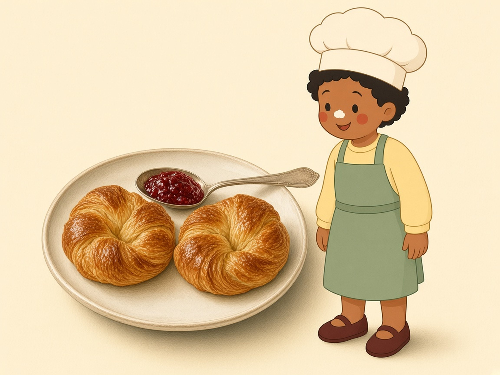
Une pâte levée, trois tours avec un carré de beurre, puis un carré de confiture.
Pourenviron 12 danois
Préparer40 min
Attendrefroid entre les tours, puis 1 h à 1 h 30
Cuire16 à 18 min à 190 °C
La détrempe, c’est la pâte sans le gros beurre. Le beurre entre ensuite en carré, et on fait 3 tours simples : trois plis en lettre. La confiture n’est pas dans la pâte, elle est au centre de chaque carré.
Il te faut
500 gde farine de blé T55
250 gde beurre froid pour les tours
25 gde levure fraîche, ou 8 g de levure sèche
240 mlde lait froid
70 gde sucre
1œuf dans la pâte
8 gde sel fin
180 gde confiture épaisse
1œuf pour dorer
Avant
Le lait de la détrempe est froid, pas tiède : le beurre des tours ne doit pas fondre.
Beurre de tourage, ou beurre normal très froid. Il doit plier sans casser, et sans devenir mou.
Pousse dans une pièce douce, sous 26 °C. S’il fait trop chaud, le beurre sort.
Matériel
saladier
papier cuisson
rouleau
pinceau
règle
Allergènes. gluten, œuf, lait.
Trois tours, pas plus. Et une pièce fraîche pour la pousse.
Les étapes
Farine et sucre dans le bol. Sel d’un côté, levure de l’autre. Ajoute le lait froid et l’œuf. Pétris 5 minutes. La pâte est ferme.
Forme un disque, filme, 1 heure au réfrigérateur.
Avec un adulte. Entre deux papiers, tape le beurre froid en carré d’environ 15 cm. Il plie sans se briser.
Avec un adulte. Étale la pâte en rectangle d’environ 30 cm sur 16 cm. Pose le beurre sur une moitié. Rabats l’autre moitié. Soude les bords.
Étale un long rectangle, épais comme le doigt. Plie en trois, comme une lettre. C’est un tour. 30 minutes au frais.
Fais encore deux tours, avec 30 minutes au frais entre chaque. Si le beurre coule, on s’arrête et on refroidit.
Façonner et cuire
Avec un adulte. Étale un rectangle d’environ 36 cm sur 48 cm, épais d’environ 6 mm : un crayon posé à plat, et un tout petit peu plus.
Coupe des carrés de 12 cm. Tu en auras 12. Une petite cuillère de confiture au centre de chacun.
Rabats deux coins opposés sur la confiture et appuie un peu.
Pose-les sur une plaque. Couvre. Laisse gonfler 1 h à 1 h 30, dans une pièce pas chaude, jusqu’à ce qu’ils soient boursouflés.
Bats l’œuf et badigeonne délicatement, sans écraser.
Avec un adulte. Cuis 16 à 18 minutes à 190 °C, jusqu’au doré profond.
C’est réussi quand
Ils sont gonflés, dorés, et on voit des feuilles sur la tranche.
On le garde
Le jour même, ils sont meilleurs. Le lendemain, un passage de 3 minutes au four les réveille.
Noisette dit
Confiture trop liquide : elle coule. Choisis-en une épaisse.
Four sans ventilateur, grille du milieu. S’il ventile, l’adulte baisse de 15 °C.
Je relève le défi · ●●●
Croissants
Le même geste que les danois, sans l’œuf dans la pâte, puis des triangles roulés.
Pourenviron 12 croissants
Préparer45 min
Attendrefroid entre les tours, puis 1 h 30 à 2 h
Cuire16 à 18 min à 190 °C
Le croissant n’a pas d’œuf dans la détrempe, et un peu moins de sucre que le danois. Le beurre de tourage fait les feuilles. Trois tours simples suffisent. La pousse finale doit rester fraîche, sinon le beurre fond avant le four.
Il te faut
500 gde farine de blé T55
250 gde beurre de tourage, ou beurre très froid
25 gde levure fraîche, ou 8 g de levure sèche
250 mlde lait froid
50 gde sucre
10 gde sel fin
1œuf pour dorer
Avant
Cette page se suffit : tu n’as pas besoin d’ouvrir celle des danois.
Lait froid. Levure et sel séparés.
Si le beurre brille pendant que tu roules, 20 minutes au frais.
Matériel
saladier
rouleau
papier cuisson
pinceau
règle
Allergènes. gluten, œuf, lait.
La pointe sous le croissant, sinon il s’ouvre au four.
Les étapes
Farine et sucre dans le bol. Sel d’un côté, levure de l’autre. Ajoute le lait froid. Pétris 5 à 8 minutes. La pâte est ferme, pas collante.
Disque, film, au moins 1 heure au réfrigérateur.
Avec un adulte. Tape le beurre en carré d’environ 15 cm, entre deux papiers. Il plie sans casser.
Avec un adulte. Étale la pâte en rectangle d’environ 30 cm sur 16 cm. Beurre sur une moitié, rabat, soude les bords.
Étale, plie en trois comme une lettre. C’est un tour. 30 minutes au frais. Fais 3 tours en tout, avec une pause au frais entre chaque.
Rouler les croissants
Avec un adulte. Étale un rectangle d’environ 60 cm de long et 25 cm de large, épais comme un crayon posé à plat, environ 7 mm.
Avec un adulte. Coupe 6 bandes de 10 cm. Coupe chaque bande en deux le long de la diagonale. Tu as 12 triangles, et toute la pâte est utilisée. La base est le côté de 10 cm.
Étire un peu le triangle. Roule de la base vers la pointe. La pointe se colle en dessous. Courbe un peu les pointes.
Pose-les pointe en dessous, espacés, sur du papier. Couvre. Laisse gonfler 1 h 30 à 2 h sous 26 °C, jusqu’à ce qu’ils soient boursouflés et tremblent si on secoue doucement la plaque.
Dore avec l’œuf battu, sans appuyer et sans faire de flaque.
Avec un adulte. Cuis 16 à 18 minutes à 190 °C. Le dessous aussi doit être doré. S’il est pâle, 2 minutes de plus.
C’est réussi quand
Dorés, légers, et des feuilles visibles quand on les ouvre.
On le garde
Le jour même. On peut les congeler crus, après façonnage, et les faire lever le matin.
Noisette dit
Un bâton de chocolat posé sur la base, avant de rouler, donne un pain au chocolat.
Four sans ventilateur, grille du milieu. S’il ventile, l’adulte baisse de 15 °C.
Si ça coince
Pâte trop sèche
Une cuillère à café d’eau froide. On attend, on regarde, on n’en verse pas un verre.
Pâte trop collante
20 minutes au frais. Ensuite seulement, un peu de farine sur le plan.
Beurre qui fond dans les tours
On s’arrête. 20 minutes au réfrigérateur. On ne roule pas un beurre mou.
Rien ne gonfle
Le lait était trop chaud, ou la levure était périmée. On vérifie la date et on recommence.
Choux retombés
La porte du four a été ouverte trop tôt. La prochaine fois, on attend 25 minutes.
Beignets gras
L’huile n’était pas à 170 °C. On en fait moins à la fois, et on attend entre les fournées.
Ce que l’adulte garde
Le four
L’adulte l’allume, ouvre la porte avec une manique, et sort la plaque. On ne pose pas la main sur la porte.
La poêle
Le manche ne dépasse pas de la cuisinière. On ne jette pas d’eau sur l’huile chaude.
Le couteau
L’adulte coupe le beurre froid, épluche les fruits et tranche la pâte. Toi, tu peux décorer.
La friture
Un seul adulte, une casserole haute, 170 °C, pas d’eau, un couvercle à portée. L’huile refroidit dans la casserole, sans qu’on la déplace.
Si tu ne sais pas si c’est chaud, c’est que tu ne touches pas. Tu demandes.